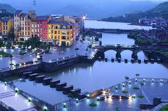
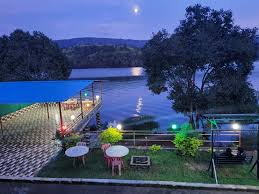
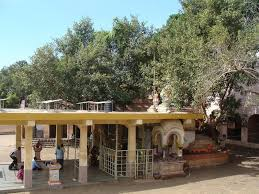
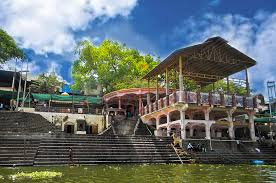

Colors of Maharashtra
Discover the breathtaking beauty of Maharashtra through our vibrant gallery. From ancient forts to stunning landscapes, each image tells a story of this magnificent region.
All
Forts
Lakes
Dams
Cities
Garden
Cave
Nature
Waterfall
Wildlife
Temple
Hillstation
palace
Monument
Beach
park
Entertainment
Bridge
Aquarium
Springs
Sinhagad Fort
Ancient hill fortress located near Pune with rich historical significance
View Details
Khadakwasla Dam
Scenic dam on the Mutha River providing water to Pune city
View Details
Mulshi Lake
Beautiful lake surrounded by Sahyadri mountains and dense forests
View Details
Panshet Dam
Picturesque dam known for its serene surroundings and water sports
View Details
Rajmachi Fort
Historic fortification with stunning views of the Western Ghats
View Details

Lavasa
India's first planned hill city modeled after Italian town Portofino
View Details
Lohagad Fort
Ancient fort with magnificent architecture and panoramic views
View Details
Pawna Lake
Serene lake surrounded by lush green hills and peaceful atmosphere
View Details
Okayama Friendship Garden
Beautiful Japanese-style garden in Pune with peaceful atmosphere
View Details
Bhaja Caves
Ancient Buddhist rock-cut caves dating back to the 2nd century BCE
View Details
Kaas Plateau
UNESCO World Heritage Site known as the Valley of Flowers of Maharashtra
View Details
Thoseghar Waterfalls
Series of cascading waterfalls plunging from 200 meters height
View Details
Sajjangad Fort
Historical and spiritual site known as 'Fort of Good People'
View Details
Ajinkyatara Fort
One of the most famous historical forts in Maharashtra
View Details
Chalkewadi Windmill Farm
One of the largest windmill farms in India with scenic landscapes
View Details
Vasota Fort & Koyna Wildlife Sanctuary
Dream destination for trekkers and wildlife lovers
View Details

Tapola (Mini Kashmir)
Hidden gem with lakeside destination surrounded by lush green hills
View Details
Gokak Waterfall
Breathtaking waterfall often compared to Niagara Falls
View Details
Dandoba Hills & Lake
Beautiful spot for trekking, nature walks, and picnics
View Details
Krishna River Ghat & Sangameshwar Temple
Peaceful riverside spot with famous temple dedicated to Lord Shiva
View Details

Audumber (Dattadeva Temple)
Spiritual and serene picnic spot on the banks of Krishna River
View Details
Sagareshwar Wildlife Sanctuary
Man-made wildlife reserve spread across 11 square kilometers
View Details
Mahalaxmi Temple, Kolhapur
One of Maharashtra's most revered pilgrimage sites
View Details
Khidrapur Kopeshwar Temple
Masterpiece of ancient Indian architecture on Krishna River banks
View Details
Rankala Lake
Popular picnic spot with lush gardens and walking tracks
View Details
Panhala Fort
Largest fort in the Deccan region with stunning Sahyadri views
View Details
Vishalgad Fort
Majestic fort with panoramic views and historical importance
View Details
Gaganbawda Hill Station
Picturesque hill station with misty hills and breathtaking valleys
View Details
Radhanagari Wildlife Sanctuary
Home to Indian bison (Gaur) and other wildlife species
View Details
Jyotiba Temple
Grand temple dedicated to Lord Jyotiba, an incarnation of Shiva
View Details
Shalini Palace
Historical palace with Indo-Saracenic architecture
View Details
Kaneri Math Siddhagiri Museum
Open-air museum depicting rural life in Maharashtra
View Details
Kumbhi Dam
Serene water reservoir surrounded by forests and hills
View Details
Bhivpur Waterfall
Hidden gem known for its tranquility and scenic beauty
View Details

Narsobawadi
Famous for Narsoba Temple dedicated to Lord Dattatreya
View Details
Siddheshwar Temple & Lake
Solapur's most famous pilgrimage and picnic spot
View Details
Hipparga Lake
Hidden gem and perfect picnic spot for nature lovers
View Details
Nannaj Great Indian Bustard Sanctuary
Wildlife reserve dedicated to critically endangered Great Indian Bustard
View Details
Kambar Talav
Scenic man-made lake known for its tranquility
View Details
Barshi Hills
Beautiful hill range perfect for trekking and photography
View Details
Gateway of India
Iconic arch-monument built in 1924 overlooking Arabian Sea
View Details
Marine Drive
3.6 km-long boulevard known as the 'Queen's Necklace'
View Details
Elephanta Caves
UNESCO World Heritage Site with stunning rock-cut sculptures
View Details
Chhatrapati Shivaji Maharaj Terminus
UNESCO-listed railway station with Victorian Gothic architecture
View Details
Siddhivinayak Temple
One of Mumbai's most revered Hindu temples
View Details
Juhu Beach
Famous beach known for golden sand and lively atmosphere
View Details
Haji Ali Dargah
Famous Islamic pilgrimage site on small islet in Arabian Sea
View Details
Chowpatty Beach
Well-known destination for Mumbai's street food and leisure
View Details
Kanheri Caves
Ancient Buddhist rock-cut caves within Sanjay Gandhi National Park
View Details
Sanjay Gandhi National Park
Green oasis in Mumbai covering 104 sq. km with diverse flora/fauna
View Details
Film City
Sprawling film studio complex spread over 520 acres
View Details
Bandra-Worli Sea Link
Modern engineering marvel connecting Mumbai's western suburbs
View Details
Taraporewala Aquarium
India's oldest public aquarium with marine and freshwater species
View Details
Upvan Lake
Picturesque spot in Thane with serene environment
View Details
Yeoor Hills
Scenic hill range within Sanjay Gandhi National Park
View Details
Tansa Lake
Pristine freshwater lake and paradise for nature lovers
View Details
Kelva Beach
Beautiful and unspoiled beach along the Arabian Sea
View Details
Vasai Fort
Historic Portuguese-era fort with majestic ruins
View Details
Gorakhgad Fort
Lesser-known but fascinating trekking destination
View Details
Kachrali Lake
Peaceful spot in Thane with clean waters and walking tracks
View Details
Kelwa Beach
Scenic and peaceful beach in Palghar district
View Details
Shirgaon Fort
Historical site dating back to Shivaji Maharaj era
View Details
Mahim Beach
Untouched coastal gem offering peaceful getaway
View Details
Tungareshwar Wildlife Sanctuary
Paradise for nature lovers and wildlife enthusiasts
View Details
Vajreshwari Hot Springs
Natural hot springs with medicinal properties
View Details
Raigad Fort
Capital of Chhatrapati Shivaji Maharaj's empire
View Details
Harihareshwar Beach & Temple
Serene beach town with famous temple dedicated to Lord Shiva
View Details
Diveagar Beach
Hidden gem with clean, peaceful shoreline
View Details
Murud-Janjira Fort
One of India's most impressive sea forts
View Details
Korlai Fort & Lighthouse
Scenic Portuguese fort with breathtaking sea views
View Details
Ratnadurga Fort
Historic sea fort spread over 120 acres
View Details
Ganpatipule Beach & Temple
Picturesque coastal town with self-manifested Ganesha idol
View Details
Jaigad Fort & Lighthouse
17th-century coastal fort with panoramic views
View Details
Thibaw Palace
Grand historical structure with Burmese and Indian architecture
View Details
Velas Beach & Turtle Festival
Serene coastal destination famous for Olive Ridley Turtle Festival
View Details
Purnagad Fort
Secluded yet historically significant fort on Konkan coastline
View Details
Aare-Ware Beach
Picturesque twin beach with crystal-clear waters
View Details
Devgad Beach & Fort
Coastal town famous for pristine beach and historic fort
View Details
Guhagar Beach
Pristine and less-explored coastal paradise
View Details
Hedvi Beach & Dashbhuja Ganpati Temple
Serene coastline with rare 10-armed Ganesha idol
View Details
Kunkeshwar Temple & Beach
Historic Shiva temple often called 'Kashi of the Konkan'
View Details
Marleshwar Waterfall & Temple
Scenic waterfall and cave temple dedicated to Lord Shiva
View Details
Pawas (Swami Swaroopanand Ashram)
Spiritually significant village with peaceful ashram
View Details
Unhavare Hot Water Springs
Natural hot water source rich in medicinal minerals
View Details
Jaigad Ganpati Temple
Spiritually significant temple with self-manifested Ganesha idol
View Details
Sindhudurg Fort
Magnificent sea fort built by Chhatrapati Shivaji Maharaj
View Details
Tarkarli Beach
Breathtaking coastal paradise with white sandy shores
View Details
Devbagh Beach
Hidden gem at confluence of Karli River and Arabian Sea
View Details
Vijaydurg Fort
One of the oldest and strongest sea forts in Maharashtra
View Details
Amboli Hill Station
Picturesque hill station in Western Ghats with waterfalls
View Details


.jpg)